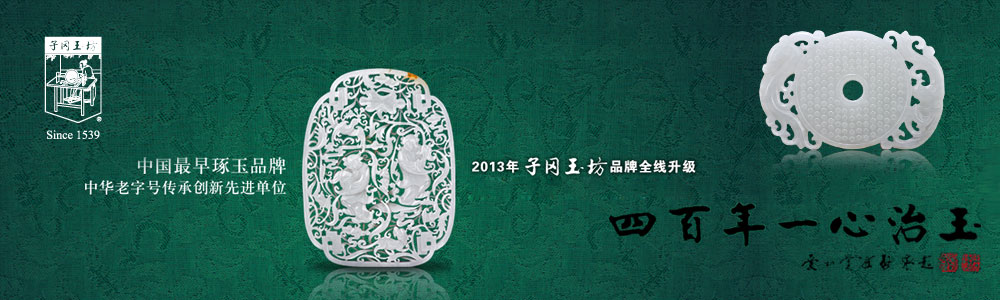
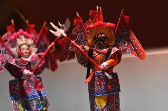
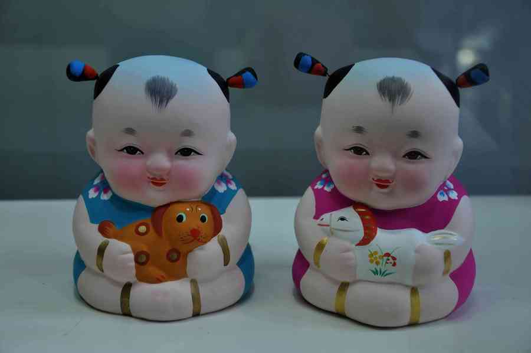
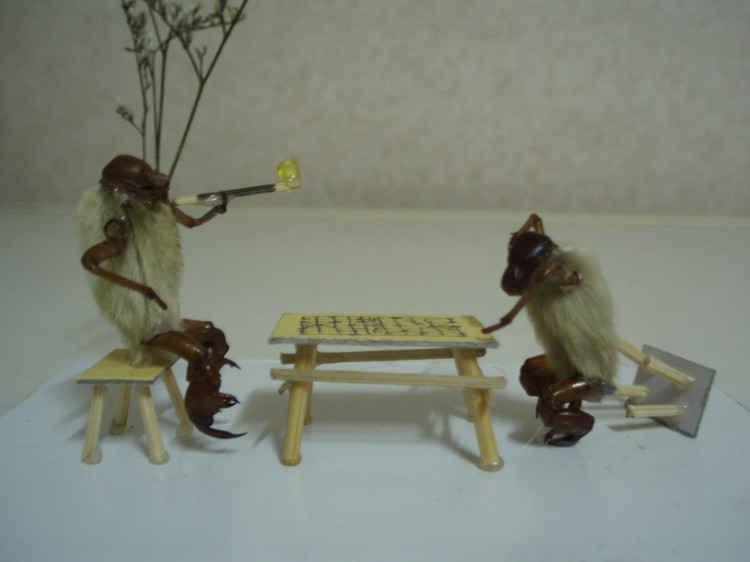

新闻中心
【文化】盘点即将消失的中国传统手工艺
发布人：Admin 发布时间:2014年-06-01 浏览：3246次
一、鬃人
鬃人早先服装用纸剪成，所绘花纹简单粗犷。至后来，改用绢、绸、缎制裁服装，并对彩绘刻意求工。传至白大成先生后，对旧工艺进行了进一步革新，使其受震后舞动的更加灵巧。 鬃人的一般规格是17~18厘米高，完成一个鬃人需要60多道工序。
二、惠山泥人
江苏无锡的惠山泥人，发展历史悠久，具有极高的文化内涵。其中最有名气和最具代表性的当推”大阿福”，”大阿福”体态饱满，憨态可掬，怀抱异兽，赤足盘膝，给人一种健康、美好、幸福的感受。 虽然现在的惠山泥人有着不小的市场，但是就整个泥人艺术来说，其前景不容乐观。 由于保护不力，老艺人们日渐凋零，传统的手工作坊渐渐被模具加工厂所代替，以致惠山泥人出现了鱼龙混杂的情况。而且，最具代表性的戏文泥人处境甚忧。
三、毛猴
毛猴是老北京的一种民间工艺品，因其形象憨态可掬，很受人们的喜爱。而在现在的北京城，懂毛猴制作的人也只有三四位，因此，现在的很多年轻人都不知毛猴为何物。 毛猴主要是用蝉蜕、辛夷（玉兰花凋谢后留下的毛绒状物）、白芨、木通这四味中药为材料做成。毛猴工艺品的题材主要是模拟人的动作和生活场景，反应市井生活，民俗为多。以物代猴，以猴代人，惟妙惟俏。
- 关于
- 品牌故事
- 联系我们
- 加入我们
- 版权声明
- 产品
- 竹编
- 纸艺
- 皮影
- 手工刺绣
- 关注
- 新浪微博
- 腾讯微博
- 企业微信
- QQ空间
- 留言
- 意见反馈
- 问题留言
- 媒体联络
- 在线客服
 微信关注
微信关注